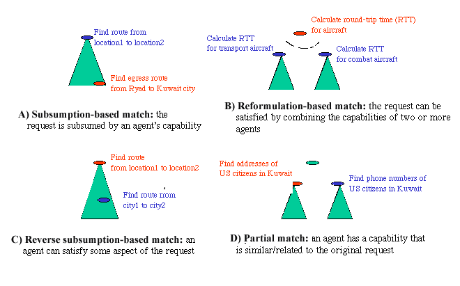

Phosphorus: A Knowledge and Experience-based Agent Capabilities Matcher
Yolanda Gil and Robert MacGregor
When agents are developed and used in distributed and heterogeneous environments, it is hard to predict in advance the exact form of the requests and to describe precisely all the capabilities of available agents. Loose coupling between requests and agent capabilities becomes a core enabling technology to support interoperability of heterogeneous groups of agents, especially when they operate in knowledge-rich domains. We would like to build on ISI’s PowerLoom technology for knowledge representation and reasoning and EXPECT technology for matching problem-solving goals to provide this capability.
We propose to develop Phosphorus, a knowledge-based matcher that accepts a user’s description of a needed service as input and responds with a ranked list of agents that have the capability to provide that service. The Phosphorus matcher will be both knowledge based and experience based. It will access a base of ontological knowledge to assist the process of performing structural matches between pairs of requested and advertised capabilities, and it will take a knowledge based approach to guide a post-match decision process that determines how retrieved capabilities can be selected, reformulated, and/or combined to best satisfy a user request. We assume that exact matches will be relatively rare; our matcher will exploit domain ontologies to allow loose-coupling between agent capabilities and user requests, finding agents that have more specific capabilities than what was requested, or agents that can provide a related service when no exact matches are found. Loose coupling will be enabled by using EXPECT’s goal and capability language to describe agent capabilities and requests that would then be matched through subsumption, goal reformulation, and partial match. The matcher will also be experienced-based, using learning techniques to improve the utility of its matches over time. A mature version of Phosphorus would be able to abstract the results of its learning, storing its experience in the form of axioms in a knowledge base that summarize its knowledge of matching requests with agents within a particular domain. Phosphorus can be used standalone or be used as a service within existing agent integration architectures.
We plan to exploit two basic technologies that we have developed at ISI: EXPECT’s approach to goal and capability matching, and PowerLoom’s partial match mechanism.
Each agent publishes its capabilities that describe the various kinds of services that it is able to perform. Capabilities can be general, such as "Transport tanks from a location to another location", or specific, such as "Find names and addresses of all U.S. residents in Kuwait". Capabilities expressed in a formal, high-level language patterned after the method capability language developed for ISI’s EXPECT system. User requests are formulated in the same language. Capabilities and requests will be expressed as verb clauses with an action name and several roles (as in a case grammar). The language also allows a rich specification of role types covering instances vs concepts, individuals vs sets, and intensional vs extensional. Terms in the language (such as verbs and role names) will be drawn from a very broad coverage ontology such as the SENSUS ontology. Domain-specific ontologies will refine or specify additional terms. Requests and capabilities will be translated into Loom concepts.

Figure 1: Matching requests (shown in boldface) with agent capabilities.
Like EXPECT, Phosphorus will exploit the domain ontologies to match posted goals with available methods. Domain ontologies provide background knowledge to support goal reformulation s and subsumption-based matching. There are several ways to match a given request with the capabilities of available agents, as shown in Figure 1:
A), B), and C) are currently supported by EXPECT. C) and D) can be supported by PowerLoom’s partial matcher. This partial matcher uses neural network techniques to match queries with objects in the knowledge base that satisfy some aspect of the query.
All the requests will be kept in the knowledge base as records of the usage of agents, as well as any feedback collected from users or systems about the utility of the agents retrieved. This data can be analyzed to guide the matching process in making better suggestions when several alternative agents are available to satisfy a request.
As an example, suppose a request is issued to find routes for all vehicles used in an evacuation, which are wheeled vehicles, passenger ships, and helicopters. There are several route planners available, each with different capabilities but no one for finding routes for all the vehicles used. Phosphorus will generate an answer as follows. Since there is no agent that can find routes for all vehicles, it reformulates the query into finding routes for wheeled vehicles, for passenger ships, and for helicopters. For passenger ships it finds through subsumption an agent that finds routes for any ship. There is no agent that can find routes for helicopters, but it suggests by partial match to use an agent that can find routes for aircraft since aircraft and helicopter are siblings in the ontology. Finally, there are no agents to find routes for cars in this particular region where no maps are available, but it finds by reverse subsumption match an agent that can find scenic roads and another agent that can fire roads from a Fire Department database. Of the latter, the system suggests to use the former, since that was the preferred choice in other previous evacuation scenarios.
The capabilities matcher within ISI’s EXPECT system provides us with technology that can serve as the blueprint for an initial version of the Phosphorus system. This includes a language for expressing capabilities (the CommonP plan language uses the same capabilities sublanguage), an ontology that specifies the semantics of capability expressions, a parser that translates capability expressions into descriptions in the Loom knowledge representation (KR) language, and built-in procedures that make specific decisions how how capabilities can be reformulated, combined, etc. to meet a particular request. The current system accesses Loom through an API, so it can be easily portable to other KR systems. To build Phosphorus, we will recast relevant EXPECT technology as a stand-alone component designed to interoperate with a network of software agents. Phosphorus will exploit the description classifier and partial matcher provided by ISI’s PowerLoom system to perform capability matching. The Phosphorus architecture will be designed to operate with KR systems other than PowerLoom, although the absence of a classifier and/or a partial matcher would downgrade system capabilities. Terms representing verbs or roles in capability descriptions will be drawn from ISI’s SENSUS ontology; however, the architecture could be integrated with any broad-coverage ontology.
The core of Phosphorus will consist of (1) a formal capabilities language, (2) a capabilities parser, that translates a capability description into a logical description, (3) a dispatcher that invokes either the PowerLoom classifier or partial matcher to search for capabilities matching a user request, (4) a Selection module that assesses the suitability of retrieved capabilities either singly or in combination to service a user request. We will take a knowledge-based approach selecting agents, so that enhancements and preferences may be effected by axiomatic as well as procedural encodings of the decision-making process.
We will develop several ontologies: A Capabilities Ontology will formalize the semantics of capability descriptions. The original EXPECT capabilities ontology could assume the complete reliability of each advertised capability (capabilities are attached to EXPECT methods). One of our enhancements will allow for expression of empirical assessments reflecting observed agent behavior. A Similarity Ontology will contain taxonomic, heuristic and empirical knowledge used to evaluate the relative closeness of terms found in capability descriptions. This knowledge will augment the matching operation by, for example, defining contexts in which pairs of terms can be considered to be synonyms. An Assessment Ontology will formalize the choices and decisions performed by Phosphorus Selection module. It will also enumerate the various dimensions (action similarity, cost, time-to-completion, observed reliability, etc.) used in making an assessment.
The testbed for evaluating and demonstrating Phosphorus will contain a library of agent capabilities for existing agents participating in CoABS TIES. Our demonstration need not involve the activation of any agents; instead, given a user request, the system can access the library of capabilities and display its decision of which agent or agents should be invoked to perform the request. When a user intervenes in a decision, either because Phosphorus cannot make a selection with certainty, or when one of its selections is overridden by a user; the system will take that experience as a learning opportunity. We will demonstrate how the learning component built into the PowerLoom partial matcher can improve system performance as it reacts to observations of user preferences. We will also show how explicit entry of knowledge into one of Phosphorus’ knowledge bases can directly influence the decision making process.
Future areas of work include better languages and tools to specify agent capabilities, additional dimensions to characterize agents (efficiency, reliability, etc), tracking the use of agents and assessing their actual capabilities, suggesting adequate partial matches, and using large amounts of background knowledge.